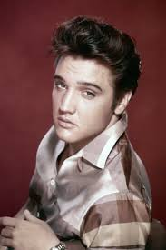
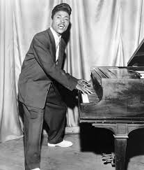
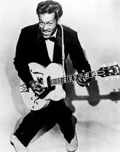
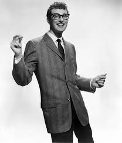
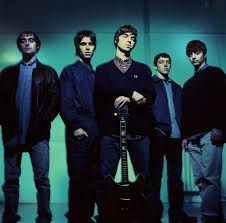
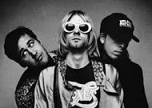
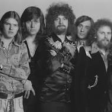

Elvis Presley |
Little Richard |
||
 |
No one else influenced the Beatles quite like Elvis. During their early years, they played a total of 31 of his songs during their live shows. John Lennon was once quoted: “If there hadn't been an Elvis, there wouldn't have been the Beatles" |
 |
Little Richard’s vocals inspired a young Paul McCartney, a hoarse screaming. Paul was confident in his ability to imitate Little Richard, that he performed his impression to John Lennon the day they met for his audition into the quarrymen. |
Chuck Berry |
Buddy Holly |
||
 |
Chuck Berry was almost as big of an inspiration to the band as Elvis, but in different ways. Chuck Berry influenced their rhythm, riffs and basslines. They also recorded some of His songs like Roll Over Beethoven and Rock ‘n roll music. |
 |
Buddy Holly and the Crickets inspired the name we all know today: The Beatles. It was also Buddy Holly who inspired Lennon and McCartney to play, sing and write their own songs, because they stated that he was the first person that they were aware of in England that could actually play a guitar and sing at the same time, who unlike Elvis, who they said wore it more than he played. |
Who Did They Influence?
Oasis |
Nirvana |
||
 |
Noel Gallagher, Oasis’ principal songwriter, often cited The Beatles as his primary inspiration. Liam Gallagher's vocal style was also very inspired by John Lennon. They also reference the Beatles lyrically in various songs like Don’t Look in Anger and Supersonic. People often compare the two bands, saying they have a very similar sound. |
 |
The Beatles were the foundation of Nirvana’s core sound, and Kurt Cobain has often said he was inspired by their melodic creativity. A lot of Nirvana songs are very pop oriented, which could be attributed to Cobain’s love for the Beatles. |
The Beach Boys |
Electric Light Orchestra |
||
 |
Rubber Soul directed Brian Wilson to explore other genres outside of surf rock, which led to the creation of Pet Sounds. From then, Pet Sounds inspired the Beatles with Sgt. Pepper’s Lonely Hearts Club Band. The rivalry between the groups sparked even more creativity to constantly outdo each other, shaping popular music even today. |
 |
Donec et tellus cursus quam egestas egestas. Proin ac hendrerit tortor. Morbi finibus erat ut purus pretium dapibus. Fusce egestas, tellus aliquet sodales tincidunt, dolor mauris varius ante, vel condimentum nunc orci vel ex. Mauris vitae pharetra nibh, nec luctus dui. Etiam tempor lectus egestas dictum auctor. Suspendisse eu diam lobortis, fermentum felis sit amet, laoreet enim. Sed condimentum egestas purus et blandit. Duis elementum libero quis luctus semper. Morbi nec quam neque. Maecenas sodales a augue ac efficitur. Donec tincidunt dui libero, sit amet venenatis orci consectetur ac. Aliquam nec euismod eros, vel commodo arcu. Duis euismod fringilla suscipit. Aliquam elementum eu turpis vel sollicitudin. Class aptent taciti sociosqu ad litora torquent per conubia nostra, per inceptos himenaeos. |